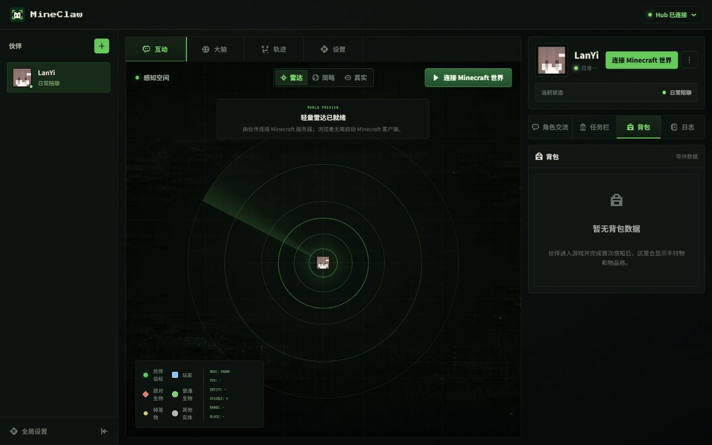
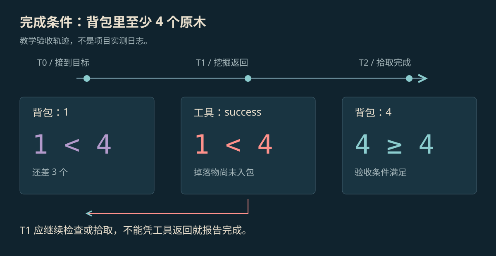

MineClaw：检查游戏里是否真的完成任务
用“背包里至少有四个原木”的教学例子说明：工具说成功，还要看游戏里的实际结果。现有控制台截图展示的是待连接界面。
界面显示出来，不等于任务已经完成

放大查看 ↗公开版本把聊天和做任务分开：MainBrain 负责日常对话，GoalAgent 负责推进目标任务；基于 Mineflayer 的连接程序负责与游戏交流。控制台显示工具调用、发生的事件，以及完成任务的依据。是否完成，要检查背包、方块、容器或距离等实际结果。
挖掘成功后，为什么还要看背包

放大查看 ↗如果方块消失了，背包数量却没增加，下一步应该检查掉落物有没有被拾取、背包有没有更新。如果原木已经够了，就该停止。工具返回“成功”和用户的目标完成，是两件需要分别检查的事。
{
"goal": {
"item": "oak_log",
"inventory_at_least": 4
},
"tool_result": {
"dig": "success"
},
"observation": {
"oak_log": 1
},
"verdict": "not_complete",
"next_check": "掉落物与拾取结果"
}项目包含什么，怎样判断实际能力
公开仓库包含伙伴实际运行的程序、网页控制台、功能测试，以及用来比较表现的一组测试任务（Benchmark）。游戏服务器、世界存档、账号设置和正在使用的数据库不在公开内容里。伙伴运行程序与网页控制台分别启动，是两个独立程序。
这篇记录依据下方链接锁定版本的项目说明。上面的四原木例子，只说明怎样检查任务是否完成。要知道真实伙伴能完成多少任务，还需要固定服务器、材料和模型设置，再重复运行测试。